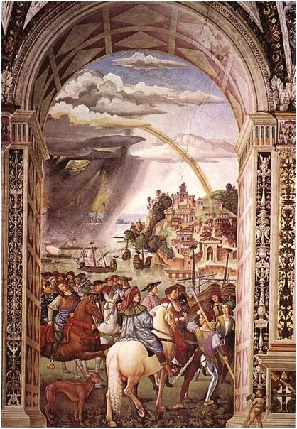
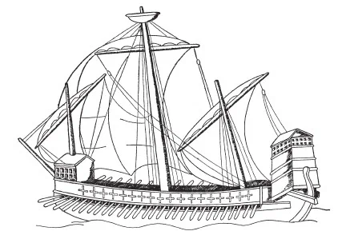

Продолжим рассказ о галеасах. Мы уже читали в статье из военно-морского словаря, что галеасы впервые были применены венецианцами в сражении при Лепанто. Действительно, участие шести галеасов в составе флота Священной лиги во многом определило ход начальной стадии сражения, однако в дальнейшем его развитии, когда боевые корабли противников взаимно прорвали линии друг друга и завязался ближний бой о заслугах галеасов исторические документы умалчивают.
Но галеас появился не накануне Лепанто, а значительно ранее. Вот перед нами знаменитая фреска Бернардино ди Бетто ди Бьяджо, прозванного за невысокий рост Пинтуриккьо (маленький художник) (1452-1513) из грандиозного цикла настенной живописи, созданного им в 1503-1507 годах для украшения библиотеки Пикколомини, будущего папы Пия II в сиенском соборе (Тоскана, Италия). Мне кажется что фреска, изображающая отъезд Пикколомини на Базельский собор, содержит очень много символических намеков. Все-таки Сиена – сухопутный город. Пейзаж же, видимый через арку, включает и шторм на море и подающую надежду радугу. Мне не приходилось об этом читать, но кажется здесь Пинтуриккьо намекает на обстоятельства смерти Пия II. Известно, что папа предпринимал серьезные усилия, направленные на организацию большого крестового похода с целью отвоевания у турок Константинополя (хотя имелись также сведения, что Пий II надеялся обратить турецкого султана в христианство). 14 августа 1464 папа стоял у окна, тщетно ожидая появления союзнического флота, который он намеревался лично препроводить до Босфора. Когда его известили о том, что ни один корабль не прибудет, папа умер от огорчения.

Но не эта душещипательная история интересует нас сейчас. Посмотрим внимательней на корабль, расположенный в центре морской композиции.

По всем описаниям, которые мы приводили в предыдущем посте, это галеас. И пусть у него форкастель еще не круглой формы, а в виде сухопутной прямоугольной башни, но уже в нем отчетливо видны два яруса бойниц для орудий (пока еще не поворачивается язык назвать их орудийными портами), укрепленная двухъярусная кормовая надстройка и бойницы для орудий малого калибра (или фальконетов) вдоль бортов. Обращает на себя внимание также комбинированное (прямое и латинское) парусное вооружение, которое сильно развито и похоже на вооружение парусного корабля.
Основная цель создания галеасов, считает В. Мондфельд («Галеры от средневековья до нового времени», 2000), — иметь судно, которое при большой крепости корпуса являлось бы хорошим парусным ходоком, несло бы возможно большее количество орудий, а благодаря веслам обладало бы высокой маневренностью, независимой от ветра. Идея была хороша и логична, но ее исполнение натолкнулось на непреодолимые трудности. Действительно, галеасы были более устойчивы и менее чувствительны к ветру, чем галеры. Из-за относительно высоких бортов они не так легко заливались, соответственно были значительно мореходнее. Их гребцы сидели выше и были защищены от вражеского обстрела наклонным бруствером.
Однако так как галеасы представляли собой попытку механически соединить характеристики гребных и парусных судов, то они волей-неволей объединили и их недостатки.
Известно (подробнее мы рассмотрим это в своем месте), что чем длиннее и ýже корпус судна, тем это благоприятнее для гребли и тем хуже для хода под парусами; чем шире и полнее корпус, тем лучше судно идет под парусами, но тем тяжелее работать гребцам. Пришлось пойти на компромисс: отношение длины к ширине у галеасов при увеличенной осадке стали делать примерно 6:1, меньше чем на галерах, но при меньшей осадке — больше чем на парусных судах. В результате галеас уступал в скорости как галере, так и парусному судну: на нем не могли так хорошо грести, как на галере, а при ветре он ходил хуже парусника.
Что касается количества орудий, то очевидно, что увеличить численность артиллерии на легких галерах или установить на них орудия более крупного калибра было невозможно. Поэтому вместе со стремительным ростом роли артиллерии, быстро развивались и новые средства ее доставки к месту сражения – своего рода плавучие батареи, или галеасы. Как мы уже говорили, тяжелое вооружение галеаса размещалось на носу и корме, причем нос вооружали больше: самое сильное орудие, куршейное 50—80-фунтовое, стояло именно там, после выстрела оно откатывалось до самой фок-мачты. Позже на галеасах ставили до 10 тяжелых носовых орудий (в два яруса) и 8 кормовых, даже между гребцами устанавливалось множество легких пушек. В сражении при Лепанто артиллерийское вооружение галеасов настолько превосходило вооружение галер, что командир каждого галеаса обязывался вести бой с пятью галерами. Отныне главным в морском бою становилось уничтожение корабля противника с помощью корабельной артиллерии или же нанесение ему сильных повреждений и только после этого взятие на абордаж.
Вообще роль абордажа в определении исхода морского боя постепенно снижалась. В сражении при Лепанто, где на стороне Священной лиги имелось шесть галеасов, турецкие корабли не смогли взять на абордаж эти артиллерийские корабли. Также и в походе «Непобедимой Армады» испанцы не смогли эффективно использовать свои абордажные команды, так как англичане уклонялись от абордажа и действовали артиллерией своих кораблей. Вместе с тем, перегруженность кораблей Армады десантом была не последней причиной тяжелых потерь испанцев во время непогоды. Самый известный, пожалуй, пример – это гибель галеаса «Хирона» на скалах вблизи побережья Ирландии. Из 1300(!) человек, находившихся на его борту, только пятеро достигли берега живыми.
Продолжим в следующий раз.